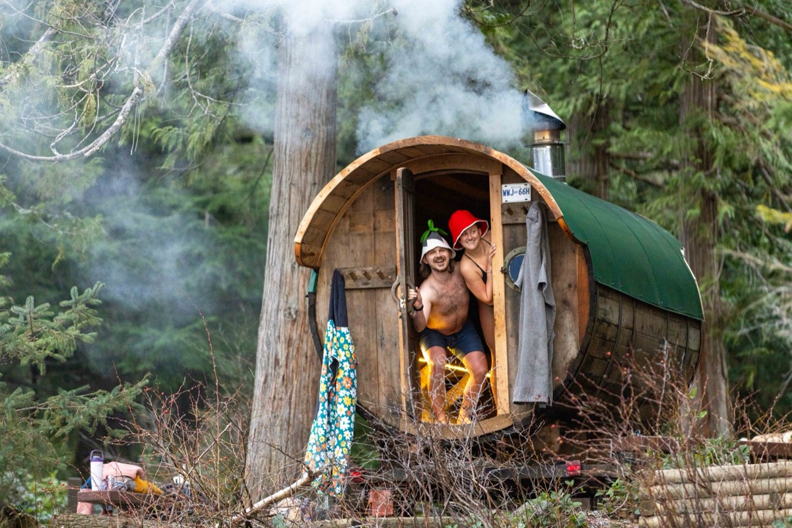

Summer gets the headlines, but winter in Squamish has its own magic: misty forests, snow on the peaks above town, eagles in the trees, and the excuse to spend a lot of time somewhere warm.
1. Watch the bald eagles in Brackendale
Every winter, bald eagles gather along the Squamish and Cheakamus rivers to feed on spawning salmon. Numbers usually peak from around December into January. Walk the dyke in Brackendale, bring binoculars, and keep dogs on leash and voices low. It's one of the great wildlife sights in BC, ten minutes from downtown.
2. See Shannon Falls at full power
Rain season means the waterfalls are roaring. Shannon Falls, just south of town, is a short, easy walk from the parking lot, and it's at its most dramatic in winter.
3. Ride the Sea to Sky Gondola on a clear day
On a bluebird winter day, the views over Howe Sound and the snowy peaks are spectacular. Check the weather and the gondola's winter hours before you go.
4. Take a forest walk in the rain
Squamish rainforest is at its greenest in winter. Pick a lower-elevation trail, wear proper rain gear, and enjoy having it mostly to yourself. Higher trails can be icy or snowy, so check conditions.
5. Do a brewery crawl
Squamish has a strong craft beer scene, and a cozy taproom is the perfect rainy-afternoon plan. Just keep the beers for after the sauna, not before.
6. Ski or ride in Whistler, sleep in Squamish
Whistler Blackcomb is under an hour up the highway. Plenty of people base themselves in Squamish for the winter and drive up for powder days. Check highway conditions and carry winter tires and chains as required.
7. Go for a winter cold plunge
If you're feeling brave, winter is peak cold-plunge season. Lakes and rivers are freezing, and the rush is unbeatable. Never go alone, avoid moving water and ice, and keep it short. More in our Squamish cold plunge guide.
8. Try one of Squamish's saunas
Squamish's sauna scene has grown fast, with spa and drop-in options around town. We round them up in The Secret Saunas of Squamish.

9. Host a private sauna night
The coziest winter evening in Squamish: a wood-fired barrel sauna and cold plunge delivered to your place, a crackling fire, and snow on the trees. A mobile sauna rental is a private 24-hour session for up to about 8 people, so you can do an evening session and a morning one. It makes a great birthday or group weekend too.
10. Make it a ritual
Locals get through the dark months with routines: a walk in the rain, something warm to drink, a sauna. Get yourself a wool sauna hat, and winter becomes something to look forward to.
Winter sauna tips
- Bring warm layers, a robe and sandals for between rounds.
- Light the fire early: a wood-fired sauna takes longer to heat up on a cold day.
- Fresh snow makes a great cold plunge alternative. Roll in it if you dare.
- Drink plenty of water. You sweat as much in winter as summer.
Questions
What is there to do in Squamish in winter?
Winter in Squamish means bald eagle viewing in Brackendale, waterfalls at full flow, forest walks, the Sea to Sky Gondola on clear days, craft breweries, and warming up in a sauna. Whistler's ski hills are also under an hour away.
When is eagle season in Squamish?
Bald eagles gather along the Squamish and Cheakamus rivers in winter to feed on spawning salmon, with numbers usually highest from around December into January.
Can you rent a sauna in Squamish in winter?
Yes. Winter is a great time for it. Mamquam Sauna delivers a wood-fired barrel sauna and cold plunge for a private 24-hour session anywhere in Squamish, Whistler or Pemberton.
More reading: Cold Plunge in Squamish: Where to Take the Plunge · Sauna for Recovery After a Big Squamish Day